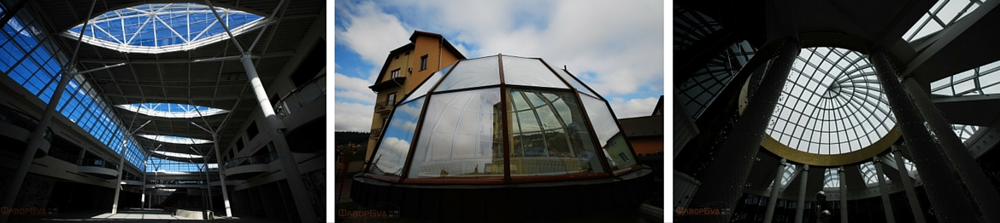
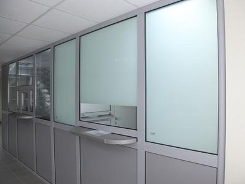
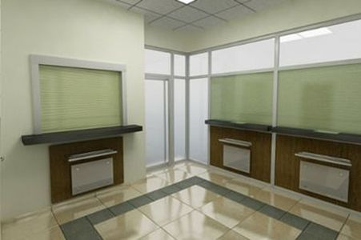

Внутрішні скляні перегородки використовуються у банках, офісах, а також торгових центрах.
Вони роблять інтер’єр будівель більш привабливим і гармонійно відокремлюють внутрішній простір будівель.
Внутрішні перегородки бувають таких видів: безрамні суцільноскляні перегородки, скляні перегородки в профільних
системах із ПВХ, скляні перегородки в алюмінієвих профільних системах.


Приємно перебувати у будівлі, коли над головою у Вас – небо. Саме такий ефект створює скляний дах
у приватному або ж зенітний ліхтар у корпоративному будинку. Вони не просто додають будівлі
оригінальності, а ще й візуально збільшують приміщення і продовжують світловий день.

Обираючи банк, більшість людей керується такими принципами, як безпека і надійність. А це, у свою чергу,
не лише репутація банку чи динаміка його розвитку, а й фізична захищеність грошей вкладників та безпосередньо працівників банку.

